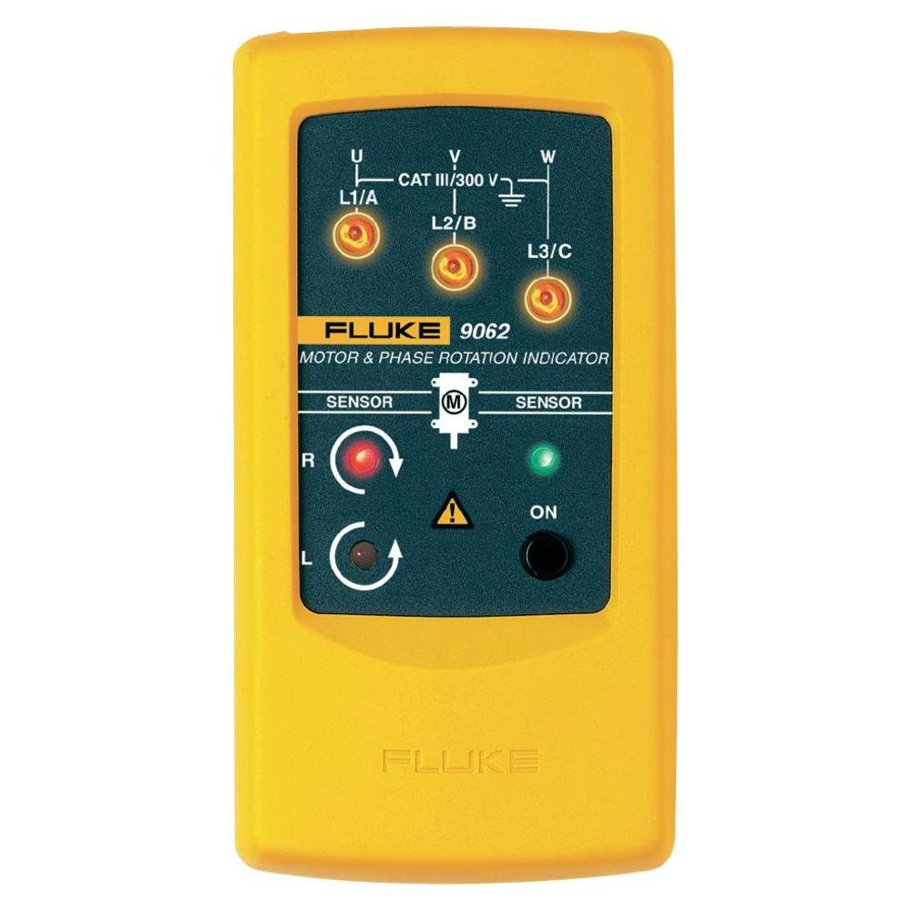
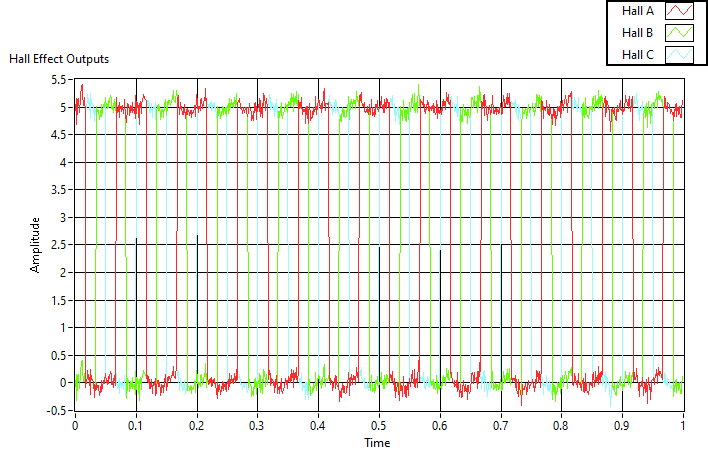
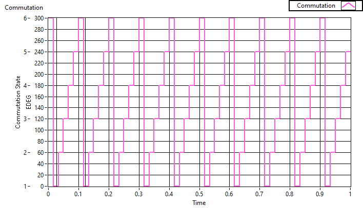
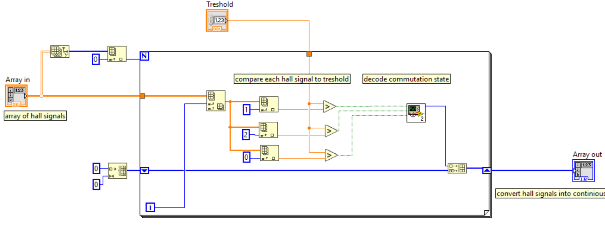
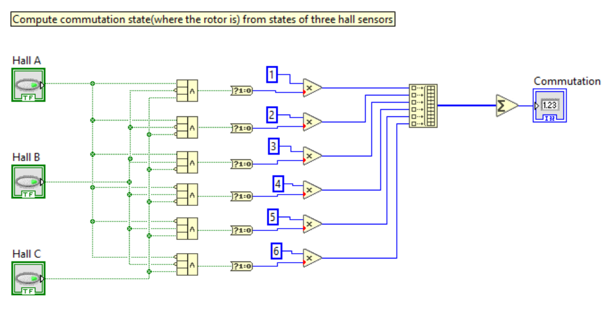
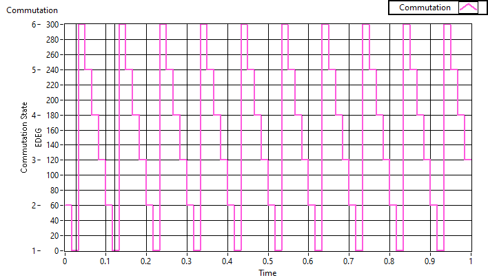
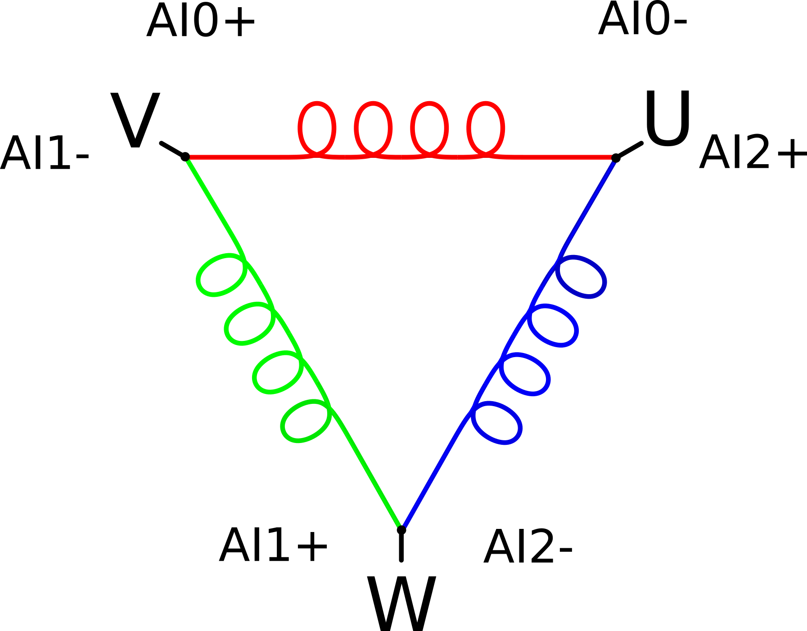
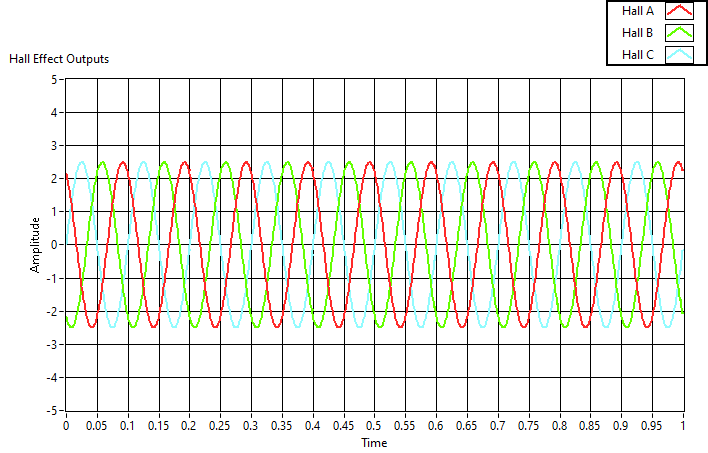
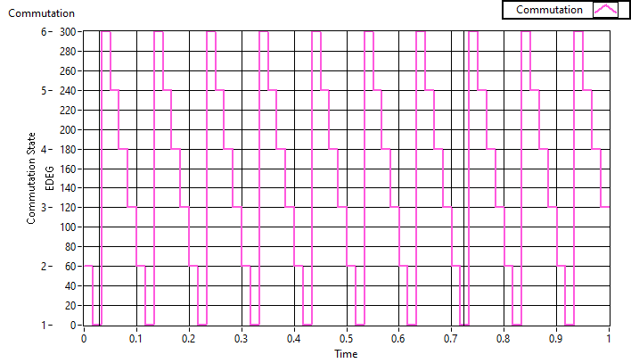

There's a very close correlation between the shape of back EMF of a motor and a typical hall sensor signal that can allow you to characterize motor winding. In this setup the motor is forced to turn by external torque and the back EMF is measured by three analogue probes connected between U, V and W phases. No hall sensors are needed. There are motor testers on the market that can do that. In this article I'm going to show how to detect motor direction from back EMF signal and compare it to a hall sensor signal.

First, it's instructive to understand how to make sense of the typical hall sensor waveforms.
Each hall sensor is detecting the presence of magnetic flux in its preferred direction. A hall sensor is ether ON or OFF, so it is a digital signal. Because each hall sensor is spaced 120 ELECTRICAL DEGREES apart (further EDEG), the waveforms they produce are also spaced with the same phase differences.

The three hall signals can be combined into a COMMUTATION STATE signal, which is always one the integer numbers 1, 2, 3, 4, 5, 6. (It is six states, because only 2 halls are on at the same time out of 3. It is the combinatorics formula "3 choose 2", which is 6). The commutation state produces the stair step pattern as seen in the graph:

The above COMMUTATION STATE graph was produced by comparing each of the three hall sensor signal with a THRESHOLD value (2.5V here) and the three resulting boolean values are fed to commutation state decoder which reduces them to an integer.


That is all there's to it! You can now read hall sensors. The stair up pattern indicates one direction of the motor, while stair down the opposite (exact direction depends on order of hall sensors and there's no single way). If you can detect ascending or descending pattern you can detect direction. Swapping any two phases will produce an opposite motion as in following graph:

Now, let's pretend there are no hall sensors in the motor and use the the three coil sets as magnetic flux detectors. Given three DIFFERENTAIL ANALOG PROBES: AI0, AI1, AI2 attach them to motor phases in the following way:

There are a few important differences in how coils behave as compared to hall sensors.
The following graph is a very idealized representation of what EMF signal from the analog probes would look like.

If you run the same code as for hall sensors, except set threshold to 0V you would get the same kind of stair pattern! (In practice due to noise I needed to set threshold to around 0.1V )

Now detecting motor direction is as easy as detecting stair up or stair down pattern. In my implementation I add all 60 EDEG deltas from each commutation state change and add them up. If the sum is positive I count it as CW direction. If the sum is negative then it is CCW direction.